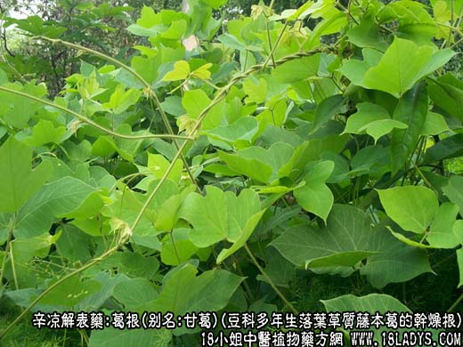
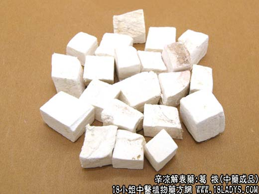
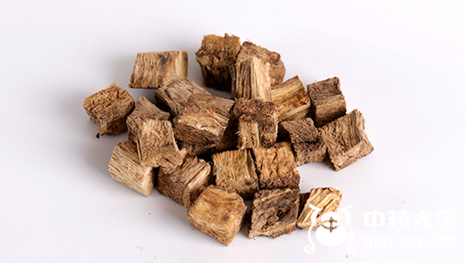
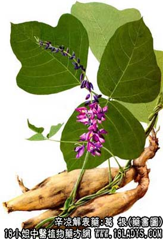

葛根为常用中药，《神农本草经》列为中品。商品中分为粉葛根和北葛根两种。葛根为解表药，主要有解肌退热、生津止渴、滋润筋脉的功效，那么葛根是什么样子呢，我们通过以下葛根图片深入了解葛根。

葛根源植物图片

葛根图片

野生葛根图片

别名：甘葛，粉葛根。
来源：为豆科多年生落叶草质藤本植物葛的干燥根。野生或栽培。
产地：粉葛根主产于广西、广东。多为栽培品。北葛根主产于湖南、湖北、浙江、河南等地。均为野生。
性状鉴别：粉葛根：块根圆柱形或切成瓣块状，有时可见残存棕色外皮，切面有数条明显的筋脉，断面显筋脉环纹。全体洁白色或黄白色，富粉性。气微，味微酸苦。
以色白粉性大，纤维细为佳。
北葛根：土黄色，粉性大，纤维性特强。质次。
主要成分：含黄酮类（包括葛根黄酮、葛根素、大豆黄酮等），淀粉等。
作用与功效：解肌退热、生津止渴、滋润筋脉，其原理为：
1、解热。动物实验证实有强力的解热作用。
2、扩张心冠脉。用葛根总黄酮在麻醉狗冠状动脉内注入，有较明显的扩张冠状动脉的作用，静脉注射也有一定作用。又实验证明，葛根对垂体后叶素引起的急性心肌缺血反应有抵抗作用。
3、增加脑血流量。葛根黄酮在实验动物颈动脉内注射，能引起脑血管扩张，脑血流量增加。又葛根黄酮能改善高血压病人的脑血流量。
此外，临床观察认为还可能有收敛消炎、缓解肌肉痉挛作用。
炮制：切片或块，生用。
性味：甘、辛、平。
归经：入脾胃经。
功能：发表退热，生津止渴。“疗肌解表甘葛先而柴胡次之”，见《药性赋》。
主治：表症发热无汗，头项强痛，热病口渴，消渴，斑疹不透，脾虚泄泻。
临床应用：1、用于解表。最适宜表症而又有颈、背部挛缩紧张感者（所谓“项背拘急”或“项背强”，如流行性感冒。因葛根能缓解颈、背部肌肉紧张，又有解热作用，常配麻黄、桂枝等，方如葛根汤。
2、用于生津。通过解热作用，使体内水分消耗减少，从而达到生津止渴目的，在风热温而引起无汗口渴时，用之最适宜。
3、用于止泻。适宜于治疗热泻（约相当于急性肠炎、细菌性痢疾），取其有收敛消炎作用，常配黄芩、黄连等清热药，方如葛根黄芩黄连汤。
如属于脾虚泄泻，可在补益脾胃的方剂内加入一味煨葛根，对增强止泻作用有一定效果。
5、用于治疗高血压。对改善头痛、头晕、项强、耳鸣、肢体麻木等症状效果较好，但降压作用不明显，须于降压药配合同用。
6、用于治疗冠心病。取其有扩张心冠脉的作用，用葛根片，对缓解心绞痛和改善心电图有一定疗效。
7、用于治疗早期突发性耳聋。由内耳血管痉挛所引起的神经感觉性聋，用葛根片，有一定疗效。
用量：6～4g，葛根总黄酮每日量约100～300毫克，分2～3次服。
处方举例：1、葛根汤（《伤寒论》）：葛根6g，麻黄4.5g，白芍9g，桂枝4.5g，生姜9g，甘草3g，大枣4枚水煎服。
2、葛根黄芩黄连汤（《伤寒论》）：葛根9g，黄芩9g，黄连6g，甘草3g，水煎服。
3、葛根黄酮片（北京冠心病协作组）：每片含葛根总黄酮100毫克，每日口服3次，每次1～片，疗程4～12周，治心绞痛。